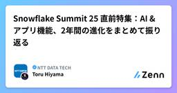
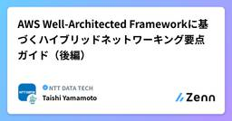

NTT DATA TECHのフィード
https://zenn.dev/p/nttdata_tech
NTT DATA公式アカウントです。 技術を愛するNTT DATAの技術者が、気軽に楽しく発信していきます。 当社のサービスなどについてのお問い合わせは、 お問い合わせフォーム https://nttdata.com/jp/ja/contact-us/ へお願いします。
フィード

SnowflakeのMFA必須化への対応として、TOTPの設定を試してみた
NTT DATA TECHのフィード
SnowflakeのMFA必須化とは2024年12月2日のSnowflake社の公式BLOGから、「Snowflake、2025年11月までに単一要素パスワード認証をブロックする」というリリースがされ、皆さん対応を始めているのではないでしょうか？https://www.snowflake.com/ja/blog/blocking-single-factor-password-authentification/上記BLOGの中には、「パスキーや認証アプリなどの時間ベースのワンタイムパスワード（TOTP）のネイティブサポートなど、この分野でより多くの製品やイノベーションを提供してい...
1日前

FortiGateVM on AWS でSD-WAN/ADVPN2.0を試す（第一回：概要編）
NTT DATA TECHのフィード
はじめにNTTデータ セキュリティ＆ネットワーク事業部 テクニカル・グレードの田中智志です。主にお客様へのネットワークシステムの提案/設計構築や、新規サービス開発を担当しております。最近はAmazon Web Services(AWS)やFortiGateを触って試すといった機会が多いです。本BlogではAWS上にデプロイしたFortiGateVMを含む構成でADVPN2.0とSD-WANのトラフィックコントロールについて試してみましたので、概論から実際の検証結果までを不定期連載の中で紹介していきたいと思います。第一回は検証構成と使用するテクニック、FortiGateVMのAWS...
2日前

Snowflake Summit 25 直前特集：AI & アプリ機能、2年間の進化をまとめて振り返る
NTT DATA TECHのフィード
はじめにいよいよ、6月2日〜5日に Snowflake Summit 2025 が開催されます！今年のサミットもデータ基盤、AI、アプリなどの様々な領域でのアップデートが予想されています。といっても、最近の Snowflake はただでさえアップデートが多く、もう何が何だか分からん！といった方もいらっしゃるのではないでしょうか？そこで今回は、私の専門領域であるAIとアプリにテーマを絞って2年間のアップデートの履歴を振り返ってみようと思います。（なぜ2年間だけ？と思ったそこの貴方、ぜひ記事を読み進めてみてください！）本記事では以下の自記事を参照して構成していますので、ぜひ併せて...
3日前

AWS Well-Architected Frameworkに基づくハイブリッドネットワーキング要点ガイド（後編） 4
4
NTT DATA TECHのフィード
はじめに本シリーズでは、Amazon Web Services (AWS) が提供しているAWS Well-Architected Frameworkのハイブリッドネットワーキングレンズを取り上げ、実際にどのような観点でチェックすべきか、そのポイントを前編と後編の2回にわたってご紹介します。本記事では、後編の信頼性、パフォーマンス効率、コスト最適化のチェックポイントについてご紹介します。AWS Well-Architected Frameworkおよびハイブリッドネットワーキングレンズの概要については、前編の記事をご覧下さい。https://zenn.dev/nttdata_t...
5日前
AWS Well-Architected Frameworkに基づくハイブリッドネットワーキング要点ガイド（前編） 4
NTT DATA TECHのフィード
はじめにAmazon Web Services (AWS) が提供するAWS Well-Architected Frameworkは、AWSアーキテクチャを評価するためのベストプラクティスとして広く知られています。このフレームワークをベースとし、特定の業界やテクノロジー領域に特化した観点を提供するレンズがあることをご存じでしょうか。本シリーズでは、ハイブリッドネットワーキングレンズを取り上げ、実際にどのような観点でチェックすべきか、そのポイントを前編と後編の2回にわたってご紹介します。本記事では、前編のオペレーショナルエクセレンス、セキュリティのチェックポイントについてご紹介しま...
6日前

VPC LatticeとPrivateLinkの基礎 - 実践で理解するトラフィックの流れと性能特性
NTT DATA TECHのフィード
はじめに先日、AWS（Amazon Web Services） 主催の「AWS Application Networking Roadshow Japan 2025」というイベントに参加し、VPC LatticeについてDive Deepしました。KeyNoteでAWSのNetworkingサービスの変遷から、今後VPC Latticeが担っていく役割について学びSAさんのセッションではVPC LatticeとPrivateLinkの統合やEKS、ECSのコンテナワークロードのコンポーネントをどうLatticeが担うかを学び午後はハンズオンで実際に手を動かすといろいろ...
10日前
サービスメッシュ環境におけるコンテナのパケットキャプチャのいろは
NTT DATA TECHのフィード
TL; DR;コンテナ/サービスメッシュ環境では通常のサーバーよりも通信経路が複雑なため知識なしでパケットキャプチャ結果を読み取るのが困難ですキャプチャ結果の読み取り方を図も交えて解説しました 背景自身が参画したプロジェクトにおいて、Anthos Service Mesh（istio）が有効化されたGoogle Kubernetes Engine上で動作するアプリケーションの処理遅延を調査した際、クライアント側（GKE Pod）のリクエストログでは時間がかかっているように見えるのに、サーバー側のアクセスログでは時間がかかっておらず、なんらかのNW遅延があるのではないかと...
11日前
Cohere Embed 4で作る！パワポ資料に強いRAGシステム
NTT DATA TECHのフィード
近年話題のRAG（Retrieval-Augmented Generation）ですが、「社内資料」や「業務ドキュメント」としてよく使われる パワポ（PowerPoint）資料 に対しても応用できたら便利だと思いませんか？この記事では、「Cohere Embed 4」 + 「Gemini」 + 「FAISS」 を使って、パワポ資料向けRAGシステム を構築する手順を紹介します。初心者でも動かしやすいように、今回は一連のシステムをライトに構築・解説します。 はじめに：自己紹介はじめまして。株式会社NTTデータグループ 技術革新統括本部 Innovation技術部の 割田 祥（...
11日前
2024 Japan AWS All Certifications Engineerの受賞を可能にした資格試験勉強法
NTT DATA TECHのフィード
!本記事の内容はあくまで個人的な経験に基づく個人の意見で弊社の公式見解ではありません 対象読者Amazon Web Service(AWS)に限らずベンダー系の試験に挑戦したいと思っている人過去、試験に挑戦したが合格できなかった人 説明すること／説明しないこと説明すること効率よく資格試験に合格するための勉強方法説明しないこと各資格試験の細かい内容 2024 Japan AWS All Certifications Engineerの紹介詳しい説明は公式に譲りますが、端的に言うとAWSの認定資格を全て保有している人に与えられる称号です。20...
12日前
非機能要求グレードの歩き方 Vol.3 オンライン編-B3リソース拡張性
NTT DATA TECHのフィード
30年以上にわたり金融IT基盤に携わる中で得た経験と知識をもとに、「やらかしがちな」技術的課題について、IPA[1]の非機能要求グレード[2]に沿って解説します。※筆者は非機能要求グレード初版の執筆に関わった経験があり、行間を含めて解説します。本記事では、オンラインシステムにおける「B.3 リソース拡張性」に焦点を当てて解説します。 B.3 リソース拡張性リソースの拡張性要件は、中項目「B.3 リソース拡張性」で定義します。下表は、非機能要求グレード 大項目「B:性能・拡張性」-中項目「B.3 リソース拡張性」を抜粋したものです。項番中項...
13日前
非機能要求グレードの歩き方 Vol.2 オンライン編-B2性能目標値
NTT DATA TECHのフィード
30年以上にわたり金融IT基盤に携わる中で得た経験と知識をもとに、「やらかしがちな」技術的課題について、IPA[1]の非機能要求グレード[2]に沿って解説します。※筆者は非機能要求グレード初版の執筆に関わった経験があり、行間を含めて解説します。本記事では、オンライン性能要件における「B.2 性能目標値」に焦点を当てて解説します。 B.2 性能目標値とオンライン性能オンライン性能要件は、中項目「B.2 性能目標値」の中で定義します。新規にシステムを構築する場合は、「B.1 業務処理量」に業務タスク1件あたりのオンライン取引数の目安を考慮して設定します。既存システムを修正する...
24日前
Google Cloud Partner Top Engineer 2025 Rookie of the Year までにやったこと
NTT DATA TECHのフィード
はじめにNTT データの近藤です。半年ほど前ですが、2024 年 11 月 20 日に Google Cloud Partner Top Engineer 2025 が発表されました。Google Cloud Partner Top Engineer (以降 PTE) は、Google Cloud のパートナー企業所属のエンジニアを Google Cloud のビジネス貢献において表彰する日本独自のプログラムです。そして、2024 年の表彰では新卒 3 年目以内で最も評価の高い人が選出される Google Cloud Partner Top Engineer 2025 Roo...
1ヶ月前
非機能要求グレードの歩き方 Vol.1 オンライン編-B1業務処理量
NTT DATA TECHのフィード
30年以上にわたり金融IT基盤に携わる中で得た経験と知識をもとに、「やらかしがちな」技術的課題について、IPA[1]の非機能要求グレード[2]に沿って解説します。※筆者は非機能要求グレード初版の執筆に関わった経験があり、行間を含めて解説します。本記事では、オンライン性能要件における「B.1 業務処理量」に焦点を当てて解説します。 B.1 業務処理量の定義とオンライン性能要件オンライン性能要件をまとめる際には、システムの性能目標値を決定する前に、その前提となる「業務処理量」を具体に定義することが重要です。これは、1つの業務処理で発生する取引数は、インターフェース設計に依存して...
1ヶ月前
Bedrock Knowledge Basesの内部処理を覗いてみた
NTT DATA TECHのフィード
はじめに最近、社内ドキュメントなどの検索手法としてRAG（Retrieval Augmented Generation）が注目を集めてます。それに伴い、パブリッククラウドではRAGを簡単に構築できるサービスが増えてきました。Amazon Web Services（AWS）ではAWS Bedrock Knowledge Bases（ナレッジベース）が提供されています。ナレッジベースは非常に便利ですが、内部処理については公式ドキュメントに詳細が記載されておらず、ブラックボックスのようになっています（マネージドサービスにありがちです）。ナレッジベースを利用していると、内部でどのような処...
1ヶ月前
僕らの仕事を楽にするかもしれない「データスペース」という技術
NTT DATA TECHのフィード
はじめに昨今、欧州や日本を中心に発展しつつある「データスペース」について、皆さんに手を動かしながら体験頂けるようなブログを書いてみます。 本記事の想定読者ITの基礎的素養はあるけど、データスペースのことをあまり知らない方様々な分野でデータ利活用を検討している方 そもそもデータスペースとはデータスペースとは、参加する組織・企業同士が互いに信頼できる仕組みのもとで、安全かつ自由にデータをやり取りできる制度と技術基盤が整った空間のことを指します。こうした制度・技術の構築・標準化により、業界・組織・企業間のコラボレーションを加速し、横断的な課題解決や新たなデジタルサービ...
1ヶ月前
DatabricksのAIエージェント評価機能の実力を検証してみた
NTT DATA TECHのフィード
はじめにこんにちは、データエンジニアをしているMaruです。近年、データ基盤と統合したAIエージェント開発のプラットフォームとしてDatabricksが注目を集めています。DatabricksはAIエージェントの開発および運用を効率化するために多くの機能を提供しており、その一つにAIエージェントの性能を評価するMosaic AI Agent Evaluationがあります。本記事では、その中でもLLMを利用した精度評価機能LLM-as-a-Judgeに焦点を当て、日本語環境でどの程度活用できるかを検証し、その結果を共有します。 本記事の対象者Databricksで生成A...
1ヶ月前
IcebergテーブルをDuckDBで手軽に読み取ろう
NTT DATA TECHのフィード
はじめにデータエンジニアをやっておりますTaichiです。最近Apache Icebergという単語をよく耳にするようになりました。Icebergの処理エンジンといえばApache SparkApache FlinkTrinoなどでしょうか。このラインナップ、構築/運用するのは結構ハードなものが多いと思いませんか？例えば、私のプロジェクトではSparkを使った構成でデータ処理を実施していますが、以下のような具体的な課題に直面しました。Apache Hadoopのクラスタ構築作業や、Sparkを動かすために専用の記述（PySpark）が必要になる等、一定の学習が...
1ヶ月前